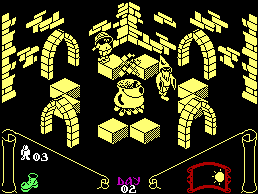
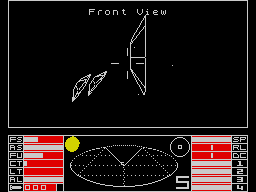

The Golden Years - 1985
With the New Year came new prices for Sinclair's Spectrum+. By making the product available so late the previous year, they had enraged retailers who had already stocked up on the original model. Sinclair's response was to reduce the price to £125. The 1984 Christmas period had been a poor one for computer sales in general, so the price cut was presumably an effort to repair the damage.
What this decision did was devalue the piles of the old Spectrums sitting on the shelves of shops around the country. Whereas before, the rubber-keyed model at least held a price advantage over the new Spectrum, now it had nothing in its favour. The apparent stagnation that had developed, coupled with the modest success of the QL and the costs of the C5 electric car project, conspired to plunge Sinclair into a financial crisis.

By the summer, Sir Clive had tried and failed to persuade Robert Maxwell to bail-out the company. Now Sinclair put plan B into action. This was to sell £10m of Spectrum Pluses to electrical retailer Dixons. This deal turned out to be a double-edged sword however. Included in it was an agreement that Sinclair would not release a new computer in Britain for another six months. This thwarted plans to introduce the Spectrum 128, already developed at the expense of Spanish distributor Investronica.
The trend in the games market was for dramatic commercialisation. Following the pattern of the previous year, many smaller companies disappeared, while the larger software houses bought their way to success with a vast number of TV/film tie-ins. The emphasis was shifting away from an inventive, experimental mentality and more to a safe, winning formula that guaranteed financial success. The pioneering, amateurish spirit in which the home computer was born was coming to an end, as a more corporate approach pervaded the industry.

That said, the quality of programming continued to improve and 1985 saw some of the most visually stunning games yet. Ultimate's dual release of Underwurlde and Knight Lore at the end of 1984 did not find its way into most shops until the beginning of the New Year. Ultimate built on the success of the latter title, with the wonderful Alien 8.
As was often the case, Ultimate danced to their own tune and paid little heed to the market trends. If anything, others followed their lead and 1985 spawned a succession of isometric 3D games. In fact, the art of self-copying within the games world was really beginning to take off. A prime example was the beat 'em up. Towards the end of the year Melbourne House launched Way of the Exploding Fist after a strong advertising campaign. Within months we also had Yie Ar Kung Fu by Imagine, Bruce Lee from US Gold and gruelling succession of other, weaker releases, all trading off the back of WOTEF's original success.
Starting off the year of tie-ins was Activision's Ghostbusters. Although it was disliked by just about everyone, it sold hugely and by the end of the year, Activision were claiming that it was the best selling game of all time. This was never actually the case, but more than ever before, it proved that a game could generate enormous sales through association alone.

Elite and Ocean were establishing themselves as the undisputed masters of the spin-off. Ocean came up with The Never Ending Story, Roland's Rat Race, Frankie Goes to Hollywood, Rambo and V. These games ranged in quality from strikingly original (Frankie) to utterly wretched (Roland). Then there was Matchday which became the benchmark for all football games and was only really bettered by its sequel. Ocean also began to release titles under the newly-acquired Imagine name, such as the acclaimed World Series Baseball. Elite on the other hand worked on sports tie-ins of some quality, like Frank Bruno's Boxing and Grand National, but still found time to produce the execrable Dukes of Hazzard.
It was the year too, in which the budget scene started to produce some games worth buying. The idea of cheap games had always appealed, but the expression about paying peanuts and getting monkeys had never applied more than to some of the heinous titles that had appeared in the preceding years. The price of most games had always hovered around the £4-6 mark, which sounds incredibly cheap by today's standards, but still represented a sizeable slice of the average teenager's pocket money. Many companies had believed that by offering games for around £2, they would make a killing. This rather underestimated the discerning tastes of the young buyers and the amount of time and money needed to produce a decent program. Mastertronic's Knight Tyme was probably the pick of the budget bunch.

The quick-fix action of the shoot 'em up found popularity again, with the likes of Incentive's excellent Moon Cresta, Commando by Elite and the awesome Highway Encounter from Vortex. A few platform games still found a market, although the genre itself was not as popular as in previous years. Chuckie Egg 2 and the cripplingly difficult Technician Ted stood out from the crowd. Larger, more elaborate platformers, that were effectively arcade adventures, were proving more popular, such as the dazzling Nodes of Yesod by Odin and Ultimate's Underwurlde. Other arcade adventures to find favour were Mikrogen's quirky Wally Week series and Dun Darach by Gargoyle.

The futuristic shooter Tau Ceti was slick and playable, as was Melbourne House's Starion, which helped to fill the gap before the inevitable conversion of the BBC classic Elite, which finally found its way onto the Spectrum late in the year. On the more cerebral side of the games world, CCS came up with the superb Arnhem and Desert Rats, while Doomdark's Revenge proved even better than its prequel, The Lords of Midnight.
Quicksilva and Bug Byte, who had failed to make an impact in the past year were bought up by publishing giant Argus Press, while other old names such as Fantasy and Micromania went bust. The computer press was finding it difficult too, with magazines Big K and Personal Computer Games going under. Your Spectrum chose to adapt rather than die and relaunched itself in December as Your Sinclair, becoming a far more games-based publication and winning itself a new following.
All the tie-ins, spin-offs and rip-offs aside, 1985 was a great year for well made software. Admittedly, things were being run more professionally now and there was perhaps too much idea-copying, but the result was some games of the very highest quality.
Key Events of 1985
JANUARY: Sinclair release the C5 electric vehicle.Meanwhile, Currah and Camridge Computing disappear, and Your Computer magazine and BT launch first on-line service for the Spectrum.
FEBRUARY: Magazines Personal Computer Games and Big K go under, and Micromania go bust, owed a fortune by the collapsing distributor Tiger.
MARCH: Struggling Quicksilva and Bug Byte are bought by publishing giant Argus.
JUNE: Micromega disappear.
JULY: Sinclair enter a state of financial crisis following the failure of the C5. Company debts stand at £15 million. A proposed take over by Robert Maxwell falls through. Also, Fantasy Software go bust, and MC Lothlorien are taken over by Argus Press.
OCTOBER: A deal involving the sale of £10 million of Spectrums to Dixons rescues Sinclair.
DECEMBER: Your Spectrum magazine is re-released as Your Sinclair.
Games of 1985
Ghostbusters (Activision), Gremlins (Adventure International), Alien (Argus Press), Doomdark’s Revenge (Beyond), Shadowfire (Beyond), Arnhem (CCS), Tau Ceti (CRL), Fairlight (The Edge), I, Of The Mask (Electric Dreams), Frank Bruno’s Boxing (Elite), Elite (Firebird), Dun Darach (Gargoyle), Monty Is Innocent (Gremlin), Monty on the Run (Gremlin), Dragontorc (Hewson), Technician Ted (Hewson), Mooncresta (Incentive), Emerald Isle (Level 9), Battle of the Bulge (Lothlorien), Finders Keepers (Mastertronic), Way/Exploding Fist (Melbourne), Everyone’s a Wally (Mikrogen), Skool Daze (Microsphere), Back to Skool (Microsphere), Dynamite Dan (Mirrorsoft), Frankie Goes to Hollywood (Ocean), Match Day (Ocean), Nodes of Yesod (Odin), Alien 8 (Ultimate)
Films of 1985
Back to the Future, Brazil, The Breakfast Club, Cocoon, The Color Purple, Desperately Seeking Susan, The Emerald Forest, Kiss of the Spider Woman, Out of Africa, Pee-Wee's Big Adventure, Prizzi's Honor, Rambo: First Blood, Part II, A Room With a View, St Elmo's Fire, Weird Science, Witness
Singles of 1985
Last Christmas (Wham!), I Want To Know What Love Is (Foreigner), Love And Pride (King), You Spin Me Round (Dead Or Alive), Easy Lover (Phil Collins), Welcome To The Pleasuredome (Frankie Goes to Hollywood), Everybody Wants To Rule The World (Tears For Fears), Move Closer (Phyllis Nelson), 19 (Paul Hardcastle), You'll Never Walk Alone (The Crowd), Crazy For You (Madonna), Frankie (Sister Sledge), There Must Be An Angel (Eurythmics), Into The Groove (Madonna), I Got You Babe (UB40), Dancing in the Street (Bowie & Jagger), If I Was (Midge Ure), Take On Me (A-Ha), Nikita (Elton John), A Good Heart (Feargal Sharkey), I'm Your Man (Wham!), Saving All My Love For You (Whitney Houston), West End Girls (Pet Shop Boys)